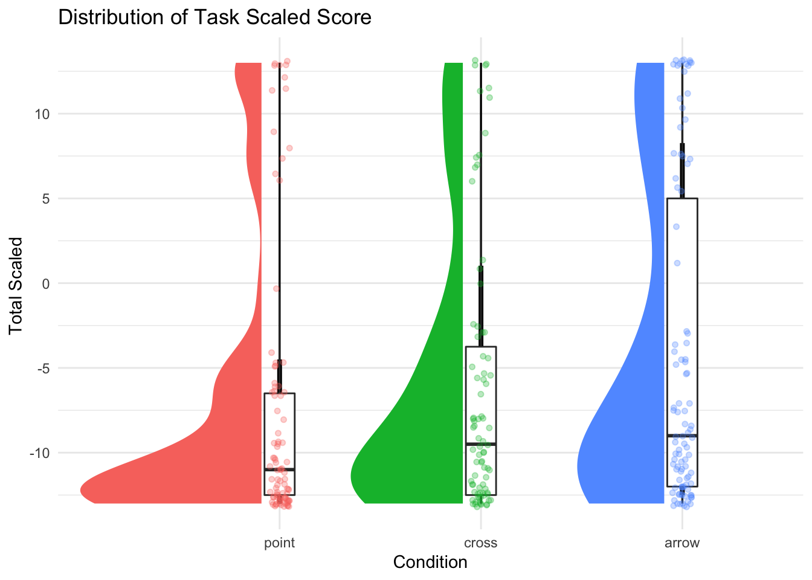
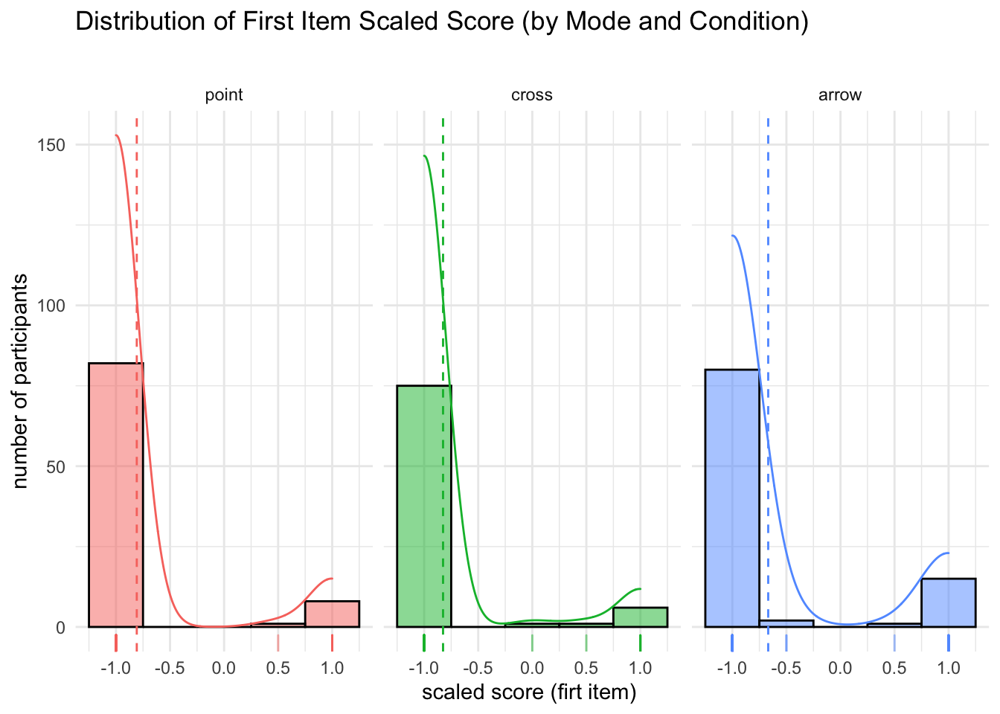
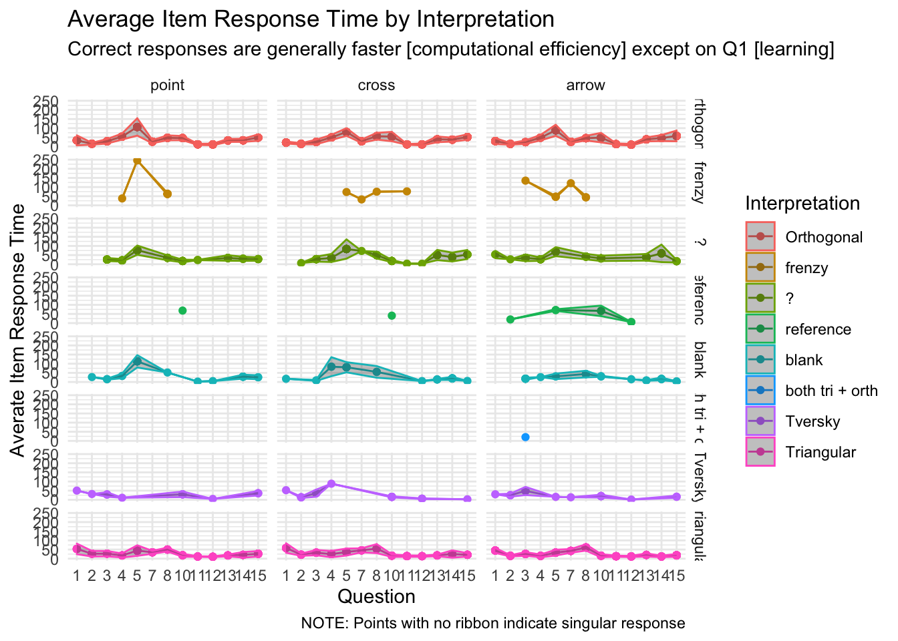

library(Hmisc) # %nin% operator
library(mosaic) #simple descriptives [favstats]
library(kableExtra) #printing tables
library(vcd) #mosaicplots
library(ggpubr) #arrange plots
library(ggformula) #quick easy plots
library(ggdist) # uncertainty viz
library(ggstatsplot) #stats plots 4 dummies
library(ggeasy) #theme editing. the way it should be
library(multimode) #test for multimodality
library(fitdistrplus) #fitting distributions
library(performance) #multimodality
library(tidyverse) #ALL THE THINGS
#OUTPUT OPTIONS
library(dplyr, warn.conflicts = FALSE)
options(dplyr.summarise.inform = FALSE)
options(ggplot2.summarise.inform = FALSE)
options(scipen=1, digits=3)
#GRAPH THEMEING
theme_set(theme_minimal()) Description
The purpose of this notebook is describe the distributions of dependent variables for Study SGC4B.
# HACK WD FOR LOCAL RUNNING?
# imac = "/Users/amyraefox/Code/SGC-Scaffolding_Graph_Comprehension/SGC-X/ANALYSIS/MAIN"
mbp = "/Users/amyfox/Sites/RESEARCH/SGC—Scaffolding Graph Comprehension/SGC-X/ANALYSIS/MAIN"
setwd(mbp)
#IMPORT DATA
df_items <- read_rds('analysis/SGC4B/data/2-scored-data/sgc4b_scored_items.rds')
df_subjects <- read_rds('analysis/SGC4B/data/2-scored-data/sgc4b_scored_participants.rds')
df_absolute_progress <- read_csv('analysis/SGC4B/data/2-scored-data/sgc4b_absolute_progress.csv')
df_scaled_progress <- read_csv('analysis/SGC4B/data/2-scored-data/sgc4b_scaled_progress.csv')
#TREAT QS AS FACTORS
df_items$q = as.factor(df_items$q)
#TODO TEMP REMOVE AFTER RESCORED
#REORDER FACTORS
order <- c("point" ,"cross", "arrow")
df_subjects <- df_subjects %>% mutate(
pretty_condition = factor(pretty_condition, levels = order))
df_items <- df_items %>% mutate(
pretty_condition = factor(pretty_condition, levels = order))SAMPLE
Data Collection
Data were collected online in Winter 2022.
title = "Participants by Condition and Data Collection Period"
cols = c("point", "cross","arrow", "Total for Period")
cont <- table(df_subjects$term, df_subjects$condition)
cont %>% addmargins() %>% kbl(caption = title, col.names = cols) %>% kable_classic()| point | cross | arrow | Total for Period | |
|---|---|---|---|---|
| winter22 | 91 | 98 | 83 | 272 |
| Sum | 91 | 98 | 83 | 272 |
Participants
#Describe participants
subject.stats <-df_subjects %>% dplyr::select(age) %>% unlist() %>% favstats()
subject.stats$percent.female <- df_subjects %>% filter(gender=="Female") %>% count() %>% unlist()/nrow(df_subjects)
title = "Descriptive Statistics of Participant Age and Gender"
subject.stats %>% kbl (caption = title) %>% kable_classic()%>%
footnote(general = "Age in Years",
general_title = "Note: ",footnote_as_chunk = T) | min | Q1 | median | Q3 | max | mean | sd | n | missing | percent.female | |
|---|---|---|---|---|---|---|---|---|---|---|
| 12 | 19 | 20 | 21 | 28 | 20.3 | 1.67 | 272 | 0 | 0.643 | |
| Note: Age in Years |
272 participants (64 % female ) undergraduate STEM majors at a public American University participated in exchange for course credit (age: 12 - 28 years).
RESPONSE ACCURACY
Subject Level Scores
Subject level scores summarize the the response accuracy by a particular participant across all discriminant items in the graph comprehension task.
Task Absolute Score
Recall from ?@sec-absolute-scoring that the absolute score (following the dichotomous scoring approach) s_NABS indicates if the subject’s response for a particular item was perfectly correct: whether they selected all correct answer options and no others (excluding certain allowed exceptions, such as also selecting the data point referenced in the question). Across the entire task, there ae 13 strategy discriminating questions.
title = "Descriptive Statistics of Task Response Accuracy (Total Absolute Score)"
abs.stats <- df_subjects %>% dplyr::select(s_NABS) %>% unlist() %>% favstats()
abs.stats %>% kbl (caption = title) %>% kable_classic() %>%
footnote(general = "# questions correct [0,13]",
general_title = "Note: ",footnote_as_chunk = T) | min | Q1 | median | Q3 | max | mean | sd | n | missing | |
|---|---|---|---|---|---|---|---|---|---|
| 0 | 0 | 0 | 2 | 13 | 2.6 | 4.3 | 272 | 0 | |
| Note: # questions correct [0,13] |
When combined overall, total absolute accuracy scores in the TEST phase (n = 272) range from 0 to 13 with a slightly lower mean score of (M = 2.6, SD = 4.3).
#GGFORMULA | DENSITY HISTOGRAM SUBJECT TOTAL ABSOLUTE
gf_props(~s_NABS, data = df_subjects) +
labs(x = "number of correct responses",
y = "% of subjects",
title = "Distribution of Task Absolute Score ",
subtitle = "") ##GGPUBR | HIST+DENSITY SCORE BY CONDITION/MODE
p <- gghistogram(df_subjects, x = "s_NABS", binwidth = 0.5,
add = "mean", rug = TRUE,
fill = "pretty_condition", #, palette = c("#00AFBB", "#E7B800"),
add_density = TRUE)
facet(p, facet.by=c("pretty_condition")) +
labs( title = "Distribution of Task Absolute Score",
subtitle ="",
x = "Total Absolute Score", y = "number of subjects") +
theme_minimal() + theme(legend.position = "blank")##VERTICAL RAINCLOUD USING GGDISTR
ggplot(df_subjects, aes(x = pretty_condition, y = s_NABS,
fill = pretty_condition) ) +
ggdist::stat_halfeye(
side = "left",
justification = 1.1,
width = 1,
point_colour = NA
) +
geom_boxplot(
inherit.aes = FALSE, #supress fill
mapping = aes(x=pretty_condition, y = s_NABS),
width = .15,
outlier.shape = NA
) +
geom_point(
inherit.aes = FALSE, #supress fill
mapping = aes(x=pretty_condition, y = s_NABS, color = pretty_condition),
size = 1.3,
alpha = .3,
position = position_jitter(
seed = 1, width = .05
)) + labs(
title = "Distribution of Task Absolute Score ",
x = "Condition", y = "Total Absolute Score ") +
theme(legend.position = "blank") +
coord_cartesian(xlim = c(0.5, NA), clip = "off")#STATSPLOT
ggbetweenstats(y = s_NABS, x = pretty_condition, data = df_subjects,
type = "nonparametric", var.equal = FALSE,
pairwide.display = "significant", )#troubleshoot why broken
#PLOT EMPIRICIAL CUMULATIVE DISTRIBUTION FUNCTION
# ggplot(data = df_subjects, aes(s_NABS)) +
# stat_ecdf(geom = "step") +
# facet_grid(pretty_condition) +
# labs( title = "Empirical Cumulative Density Function — Task Absolute Score ",
# x = "Total Absolute Score [0,13]",
# y = "Cumulative Probability")Visual inspection of this distribution suggests it is not normal, and perhaps bimodal. We verify this via an excess mass test (Ameijeiras-Alsonso et. al 2018).
multimode::modetest(df_subjects$s_NABS)Warning in multimode::modetest(df_subjects$s_NABS): A modification of the data
was made in order to compute the excess mass or the dip statistic
Ameijeiras-Alonso et al. (2019) excess mass test
data: df_subjects$s_NABS
Excess mass = 0.06, p-value <2e-16
alternative hypothesis: true number of modes is greater than 1# n_modes = multimode::nmodes(df_subjects$s_NABS, bw=2) #bw = 2questions/15 = 0.15%
# l_modes = multimode::locmodes(df_subjects$s_NABS,mod0 = n_modes, display = TRUE)The excess mass test for multimodality suggests there is not enough mass at the positive end of the score distribution to be considered multimodal.
Task Scaled Scores
The total scaled score s_SCALED summarizes the scaled score on the 13 strategy-discriminant questions, for each subject. This score ranges from from -13 (all orthogonal) to 13 (all triangular). Recall that the s_SCALED score for an item is a numeric representation of the strategy-consistent response, scaled from -1 to +1 (see ?@sec-SGC3A-scaledScore)
title = "Descriptive Statistics of Response Accuracy"
scaled.stats <- df_subjects %>% dplyr::select(s_SCALED) %>% unlist() %>% favstats()
scaled.stats %>% kbl (caption = title) %>% kable_classic()| min | Q1 | median | Q3 | max | mean | sd | n | missing | |
|---|---|---|---|---|---|---|---|---|---|
| -13 | -12.5 | -10 | -4.38 | 13 | -6.07 | 8.57 | 272 | 0 |
Overall, task scaled scores (n = 272) range from -13 to 13 with a slightly lower mean score of (M = -6.07, SD = 8.57).
#GGFORMULA | DENSITY HISTOGRAM SUBJECT TOTAL SCALED
gf_props(~item_test_SCALED, data = df_subjects) +
labs(x = "total scaled score",
y = "% of subjects",
title = "Distribution of Scaled Score ",
subtitle = "Modes at high and low ends of scale suggest concentration of high (vs) low understanding") ##GGPUBR | HIST+DENSITY SCORE BY CONDITION/MODE
p <- gghistogram(df_subjects, x = "s_SCALED",binwidth=1,
add = "mean", rug = TRUE,
fill = "pretty_condition", #, palette = c("#00AFBB", "#E7B800"),
add_density = TRUE)
facet(p, facet.by=c("pretty_condition")) +
labs( title = "Distribution of Scaled Score",
subtitle ="",
x = "total scaled score", y = "number of participants") +
theme_minimal() + theme(legend.position = "blank") ##VERTICAL RAINCLOUD USING GGDISTR
ggplot(df_subjects, aes(x = pretty_condition, y = s_SCALED,
fill = pretty_condition) ) +
ggdist::stat_halfeye(
side = "left",
justification = 1.1,
width = 1,
point_colour = NA
) +
geom_boxplot(
inherit.aes = FALSE, #supress fill
mapping = aes(x=pretty_condition, y = s_SCALED),
width = .15,
outlier.shape = NA
) +
geom_point(
inherit.aes = FALSE, #supress fill
mapping = aes(x=pretty_condition, y = s_SCALED, color = pretty_condition),
size = 1.3,
alpha = .3,
position = position_jitter(
seed = 1, width = .05
)) + labs(
title = "Distribution of Task Scaled Score",
x = "Condition", y = "Total Scaled ") +
theme(legend.position = "blank") +
coord_cartesian(xlim = c(0.5, NA), clip = "off")
#STATSPLOT
ggbetweenstats(y = s_SCALED, x = pretty_condition, data = df_subjects,
type = "nonparametric", var.equal = FALSE,
pairwide.display = "significant", )#PLOT EMPIRICIAL CUMULATIVE DISTRIBUTION FUNCTION
# ggplot(data = df_subjects, aes(s_SCALED)) +
# stat_ecdf(geom = "step") +
# # facet_grid(pretty_condition ) +
# labs( title = "Empirical Cumulative Density Function — Task Scaled Score",
# x = "Test Phase Scaled Score [-13,13]",
# y = "Cumulative Probability")Visual inspection of this distribution suggests it is not normal, and perhaps perhaps bimodal. We verify this via an excess mass test (Ameijeiras-Alsonso et. al 2018).
multimode::modetest(df_subjects$s_SCALED)Warning in multimode::modetest(df_subjects$s_SCALED): A modification of the data
was made in order to compute the excess mass or the dip statistic
Ameijeiras-Alonso et al. (2019) excess mass test
data: df_subjects$s_SCALED
Excess mass = 0.08, p-value <2e-16
alternative hypothesis: true number of modes is greater than 1# n_modes = multimode::nmodes(df_subjects$s_SCALED, bw=2) #bw = 2questions/15 = 0.15%
# l_modes = multimode::locmodes(df_subjects$s_SCALED,mod0 = n_modes, display = TRUE)The excess mass test for multimodality suggests there is not enough mass at the positive end of the score distribution to be considered multimodal.
First Item Scores
Next we consider the response accuracy on just the first question of the graph comprehension task: a subject’s first exposure to the TM graph.
First Item Absolute Score
title = "Proportion of Correct Response on First Item (Combined)"
item.contingency <- df_subjects %>% dplyr::select(item_q1_NABS, pretty_condition) %>% table() %>% addmargins(2) %>% prop.table(margin=2) %>% addmargins(1)
item.contingency %>% kbl (caption = title) %>% kable_classic()| point | cross | arrow | Sum | |
|---|---|---|---|---|
| 0 | 0.912 | 0.928 | 0.847 | 0.893 |
| 1 | 0.088 | 0.072 | 0.153 | 0.107 |
| Sum | 1.000 | 1.000 | 1.000 | 1.000 |
Across data collection sessions, first-item accuracy is consistent across experimental conditions. Incorrect answers are far more frequent (89%) than correct answers (11%). Highest accuracy is achieved in the arrow-mark condition, with roughly 15% correct response rate, compared to only 9% in the orthogonal axis control.
#PROPORTIONAL BAR CHART
gf_props(~item_q1_NABS, data = df_subjects) +
labs(x = "response accuracy",
y = "% subjects",
title = "Proportion of Correct Responses on First Item",
subtitle="")+
theme(legend.position = "none")+theme_ggdist()#STACKED BAR CHART
df_subjects %>%
ggplot(data = .,
mapping = aes(x = pretty_condition,
fill = as.factor(item_q1_NABS))) +
geom_bar(position = "fill" ) + #,color = "black") +
scale_fill_brewer(palette = "Set1") +
labs(x = "response accuracy",
title = "Proportion of Correct Responses on First Item",
x = "Condition",
fill = "",
subtitle="")#MOSAIC PLOT
vcd::mosaic(main="Proportion of Correct Responses on First Item",
data = df_subjects, item_q1_NABS ~ pretty_condition, rot_labels=c(0,90,0,0),
offset_varnames = c(left = 4.5), offset_labels = c(left = -0.5),just_labels = "right",
spacing = spacing_dimequal(unit(1:2, "lines"))) #STATSPLOT
ggbarstats(
x = item_q1_NABS,
y = pretty_condition,
data = df_subjects
)First Item Scaled Score
At the item level, the scaled score gives us a numeric measure of correctness of interpretation, ranging from -1 to 1. (note: we evaluate scaled_score on the first item rather than interpretation, because no orthogonal interpretation is available in the impasse condition)
title = "Descriptive Statistics of Response Accuracy (First Item Scaled Score)"
firstscaled.stats <- df_subjects %>% dplyr::select(item_q1_SCALED) %>% unlist() %>% favstats()
firstscaled.stats %>% kbl (caption = title) %>% kable_classic()| min | Q1 | median | Q3 | max | mean | sd | n | missing | |
|---|---|---|---|---|---|---|---|---|---|
| -1 | -1 | -1 | -1 | 1 | -0.763 | 0.634 | 272 | 0 |
When combined overall, first item scaled scores (n = 272) range from -1 to 1 with a slightly lower mean score of (M = -0.76, SD = 0.63).
#GGFORMULA | PROPORTIONAL HISTOGRAM SUBJECT FIRST SCALED
gf_props(~item_q1_SCALED, data = df_subjects) +
labs(x = "scaled score (first item)",
y = "% of subjects",
title = "Distribution of First Item Scaled Score",
subtitle = "") ##GGPUBR | HIST+DENSITY SCORE BY CONDITION/MODE
p <- gghistogram(df_subjects, x = "item_q1_SCALED", binwidth = 0.5,
add = "mean", rug = TRUE,
fill = "pretty_condition", #, palette = c("#00AFBB", "#E7B800"),
add_density = TRUE)
facet(p, facet.by=c("pretty_condition")) +
labs( title = "Distribution of First Item Scaled Score (by Mode and Condition)",
subtitle ="",
x = "scaled score (firt item) ", y = "number of participants") +
theme_minimal() + theme(legend.position = "blank") 
#STACKED BAR CHART
df_subjects %>%
ggplot(data = .,
mapping = aes(x = pretty_condition,
fill = as.factor(item_q1_SCALED))) +
geom_bar(position = "fill" ) + #,color = "black") +
scale_fill_brewer(palette = "Set1") +
labs(x = "response accuracy",
title = "Type of Responses on First Item (by Modality and Condition)",
x = "Condition",
fill = "",
subtitle="")#STATSPLOT
ggbarstats(
x = item_q1_SCALED,
y = pretty_condition,
data = df_subjects
)Interpretation Scores
Next we consider the the interpretations assigned to each response. For each response given by a participant to a question, we assign an interpretation label based on the interpretation the response most closely matches (see ?@sec-scoring-interpretation).
title = "Proportion of Interpretations Across Items Items By Condition"
item.contingency <- df_items %>% dplyr::select(interpretation, pretty_condition) %>% table() %>% addmargins(2) %>% prop.table(margin=2) %>% addmargins(1)
item.contingency %>% kbl (caption = title) %>% kable_classic()| point | cross | arrow | Sum | |
|---|---|---|---|---|
| Orthogonal | 0.607 | 0.537 | 0.500 | 0.547 |
| Satisfice | 0.000 | 0.000 | 0.000 | 0.000 |
| frenzy | 0.006 | 0.003 | 0.005 | 0.005 |
| ? | 0.093 | 0.133 | 0.090 | 0.104 |
| reference | 0.001 | 0.001 | 0.005 | 0.002 |
| blank | 0.023 | 0.027 | 0.021 | 0.024 |
| both tri + orth | 0.120 | 0.112 | 0.124 | 0.119 |
| Tversky | 0.012 | 0.016 | 0.016 | 0.015 |
| Triangular | 0.138 | 0.170 | 0.239 | 0.184 |
| Sum | 1.000 | 1.000 | 1.000 | 1.000 |
#PROPORTIONAL BAR CHART
gf_propsh(~interpretation, data = df_items, fill = ~pretty_condition) %>%
gf_facet_grid(~pretty_condition) +
labs(x = "% of items",
title = "Proportion of Interpretations Across Items",
subtitle="")+
theme(legend.position = "none")#STACKED BAR CHART
df_items %>%
ggplot(data = .,
mapping = aes(x = pretty_condition,
fill = as.factor(interpretation))) +
geom_bar(position = "fill" ) + #,color = "black") +
scale_fill_brewer(palette = "Set1") +
labs(x = "response accuracy",
title = "Response Types on All Items (by Condition)",
x = "Condition",
fill = "",
subtitle="")#MOSAIC PLOT
# vcd::mosaic(main="Proportion of Interpretations across Conditions",
# data = df_items, pretty_condition ~ interpretation, rot_labels=c(0,90,0,0),
# offset_varnames = c(left = 4.5), offset_labels = c(left = -0.5),just_labels = "right",
# spacing = spacing_dimequal(unit(1:2, "lines")))
#STATSPLOT
ggbarstats(
x = interpretation,
y = pretty_condition,
data = df_items
)
Cumulative Task Performance
#VISUALIZE progress over time ABSOLUTE score
ggplot(data = df_absolute_progress, aes(x = question, y = score, group = subject, alpha = 0.01, color = pretty_condition)) +
geom_line(position=position_jitter(w=0.15, h=0.15), size=0.1) +
facet_wrap(~pretty_condition) +
labs (title = "Cumulative Absolute Score over sequence of task", x = "Question" , y = "Cumulative Absolute Score") +
scale_x_continuous(breaks = c(1,2,3,4,5,6,7,8,9,10,11,12,13)) +
theme_minimal() + theme(legend.position = "blank")#VISUALIZE progress over time SCALED score
ggplot(data = df_scaled_progress, aes(x = question, y = score, group = subject, alpha = 0.01, color = pretty_condition)) +
geom_line(position=position_jitter(w=0.15, h=0.15), size=0.1) +
facet_wrap(~pretty_condition) +
labs (title = "Cumulative Scaled Score over sequence of task", x = "Question" , y = "Cumulative Scaled Score") +
scale_x_continuous(breaks = c(1,2,3,4,5,6,7,8,9,10,11,12,13)) +
theme_minimal() + theme(legend.position = "blank")RESPONSE LATENCY
Time on First Item
Here we consider the time spent on just the first individual item (first exposure to graph).
#DESCRIBE distribution of response time
time.stats <- df_subjects %>% dplyr::select(item_q1_rt) %>% unlist() %>% favstats()
title = "Descriptive Statistics of First Response Time (seconds)"
time.stats %>% kbl(caption = title) %>% kable_classic()| min | Q1 | median | Q3 | max | mean | sd | n | missing | |
|---|---|---|---|---|---|---|---|---|---|
| 3.88 | 15.2 | 22.4 | 33.3 | 488 | 30.8 | 38.6 | 272 | 0 |
Response time on the first item for subjects (n = 272) ranged from 3.88 to 488.05 minutes with a mean duration of (M = 30.81, SD = 38.58).
#HISTOGRAM
gf_dhistogram(~item_q1_rt, data = df_subjects) %>%
gf_vline(xintercept = ~time.stats["lab",]$mean, color = "black") %>%
gf_fitdistr(dist="gamma", color="red")+
labs(title="Distribution of First Item Response Time (seconds)", subtitle = "fit by gamma distribution", x = "First Item Response Time (seconds)", y = "% items")Warning in densfun(x, parm[1], parm[2], ...): NaNs produced
Warning in densfun(x, parm[1], parm[2], ...): NaNs produced
Warning in densfun(x, parm[1], parm[2], ...): NaNs produced
Warning in densfun(x, parm[1], parm[2], ...): NaNs produced
Warning in densfun(x, parm[1], parm[2], ...): NaNs produced
Warning in densfun(x, parm[1], parm[2], ...): NaNs produced
Warning in densfun(x, parm[1], parm[2], ...): NaNs produced
Warning in densfun(x, parm[1], parm[2], ...): NaNs produced
Warning in densfun(x, parm[1], parm[2], ...): NaNs produced
Warning in densfun(x, parm[1], parm[2], ...): NaNs producedWarning: Removed 272 rows containing missing values (geom_vline).
##GGPUBR | HIST+DENSITY SCORE BY CONDITION/MODE
p <- gghistogram(df_subjects, x = "item_q1_rt", binwidth = 0.5,
add = "mean", rug = TRUE,
fill = "pretty_condition", #, palette = c("#00AFBB", "#E7B800"),
add_density = TRUE)
facet(p, facet.by=c("pretty_condition")) +
labs( title = "Distribution of First Item Response Time (seconds)",
subtitle ="",
x = "First Item Response Time (seconds)", y = "number of items") +
theme_minimal() + theme(legend.position = "blank")
#recode as boolean correct
df_subjects <- df_subjects %>% mutate(
item_q1_NABS = as.logical(item_q1_NABS)
)
##RAINCLOUD USING GGDISTR
ggplot(df_subjects, aes(x = pretty_condition, y = item_q1_rt, color = item_q1_NABS) ) +
ggdist::stat_halfeye(
side = "left",
justification = 1.2,
adjust = .5,
width = .6,
.width = 0,
point_colour = NA) +
geom_boxplot(
width = .15,
outlier.shape = NA
) +
geom_point(
size = 1.3,
alpha = .3,
position = position_jitter(
seed = 1, width = .1
)) +
labs( title = "Distribution of First Item Response Time (seconds)",
subtitle ="",
y = "First Item Response Time (s)", x = "Condition") +
theme_ggdist() 
# + theme(legend.position = "blank")
# + coord_cartesian(xlim = c(1.2, NA), clip = "off")
#TEMP REMOVE OUTLIERS
df <- df_subjects %>% filter(item_q1_rt < 300)
#STATSPLOT
ggbetweenstats(y = item_q1_rt, x = pretty_condition, data = df,
type = "nonparametric", var.equal = FALSE,
pairwide.display = "significant", )
Time on Item
Here we consider the time spent on an individual item (across all items).
#DESCRIBE distribution of response time
time.stats <- df_items %>% dplyr::select(rt_s) %>% unlist() %>% favstats()
title = "Descriptive Statistics of Item Response Latency (seconds)"
time.stats %>% kbl(caption = title) %>% kable_classic()| min | Q1 | median | Q3 | max | mean | sd | n | missing | |
|---|---|---|---|---|---|---|---|---|---|
| 1.28 | 11.8 | 20.4 | 37.9 | 510 | 31.1 | 34 | 4080 | 0 |
Time on an individual item for subjects (n = 4080) ranged from 1.28 to 509.85 minutes with a mean duration of (M = 31.08, SD = 34.05).
#HISTOGRAM
gf_dhistogram(~rt_s, data = df_items) %>%
gf_vline(xintercept = ~time.stats["lab",]$mean, color = "black") %>%
gf_fitdistr(dist="gamma", color="red")+
labs(title="Distribution of Item Response Time (seconds)",
subtitle = "fit by gamma distribution", x = "Item Response Time (seconds)", y = "% items") Warning in densfun(x, parm[1], parm[2], ...): NaNs produced
Warning in densfun(x, parm[1], parm[2], ...): NaNs produced
Warning in densfun(x, parm[1], parm[2], ...): NaNs produced
Warning in densfun(x, parm[1], parm[2], ...): NaNs produced
Warning in densfun(x, parm[1], parm[2], ...): NaNs produced
Warning in densfun(x, parm[1], parm[2], ...): NaNs produced
Warning in densfun(x, parm[1], parm[2], ...): NaNs produced
Warning in densfun(x, parm[1], parm[2], ...): NaNs produced
Warning in densfun(x, parm[1], parm[2], ...): NaNs produced
Warning in densfun(x, parm[1], parm[2], ...): NaNs produced
Warning in densfun(x, parm[1], parm[2], ...): NaNs produced
Warning in densfun(x, parm[1], parm[2], ...): NaNs produced
Warning in densfun(x, parm[1], parm[2], ...): NaNs producedWarning: Removed 4080 rows containing missing values (geom_vline).
##GGPUBR | HIST+DENSITY SCORE BY CONDITION/MODE
p <- gghistogram(df_items, x = "rt_s", binwidth = 0.5,
add = "mean", rug = TRUE,
fill = "pretty_condition", #, palette = c("#00AFBB", "#E7B800"),
add_density = TRUE)
facet(p, facet.by=c("pretty_condition")) +
labs( title = "Distribution of Item Response Time (seconds)",
subtitle ="",
x = "Item Response Time (seconds)", y = "number of items") +
theme_minimal() + theme(legend.position = "blank")
#recode as boolean correct
df_items <- df_items %>% mutate(
score_niceABS = as.logical(score_niceABS)
)
##RAINCLOUD USING GGDISTR
ggplot(df_items, aes(x = pretty_condition, y = rt_s, color = score_niceABS) ) +
ggdist::stat_halfeye(
side = "left",
# position = position_dodgejust(),
justification = 1.5,
# adjust = .5,
width = .5,
.width = 0,
point_colour = NA) +
geom_boxplot(
width = .15,
outlier.shape = NA,
position = position_dodge2()
) +
geom_point(
size = 1.3,
alpha = .3,
position = position_jitterdodge(
# seed = 1,
dodge.width = 0.5,
jitter.width = 0.075
)) +
labs( title = "Distribution of Item Response Time (seconds)",
subtitle ="",
y = "Item Response Time (s)", x = "Condition") +
theme_ggdist() 
# + theme(legend.position = "blank")
# + coord_cartesian(xlim = c(1.2, NA), clip = "off")
#STATSPLOT
ggbetweenstats(y = rt_s, x = pretty_condition, data = df_items,
type = "nonparametric", var.equal = FALSE,
pairwide.display = "significant", )
Time on Task
Here we consider the time spent on the entire experimental task.
#DESCRIBE distribution of response time
time.stats <- df_subjects %>% dplyr::select(rt_m) %>% unlist() %>% favstats()
title = "Descriptive Statistics of Total Task Response Latency (minutes)"
time.stats %>% kbl(caption = title) %>% kable_classic()| min | Q1 | median | Q3 | max | mean | sd | n | missing | |
|---|---|---|---|---|---|---|---|---|---|
| 1.25 | 4.68 | 6.29 | 8.76 | 22 | 7.05 | 3.23 | 272 | 0 |
Total time on task for subjects (n = 272) ranged from 1.25 to 21.96 minutes with a mean duration of (M = 7.05, SD = 3.23).
#HISTOGRAM
gf_dhistogram(~rt_m, data = df_subjects) %>%
gf_vline(xintercept = ~time.stats["lab",]$mean, color = "black") %>%
gf_fitdistr(dist="gamma", color="red")+
labs(title="Distribution of Total Response Time (minutes)", subtitle = "fit by gamma distribution", x = "Total Response Time (minutes)", y = "% subjects") Warning: Removed 272 rows containing missing values (geom_vline).
##GGPUBR | HIST+DENSITY SCORE BY CONDITION/MODE
p <- gghistogram(df_subjects, x = "rt_m", binwidth = 0.5,
add = "mean", rug = TRUE,
fill = "pretty_condition", #, palette = c("#00AFBB", "#E7B800"),
add_density = TRUE)
facet(p, facet.by=c("pretty_condition")) +
labs( title = "Distribution of Total Response Time (minutes)",
subtitle ="",
x = "Scaffold Phase Time (minutes)", y = "number of subjects") +
theme_minimal() + theme(legend.position = "blank")
##VERTICAL RAINCLOUD USING GGDISTR
ggplot(df_subjects, aes(x = pretty_condition, y = rt_m, fill = pretty_condition)) +
ggdist::stat_halfeye(
side = "left",
justification = 1.2,
adjust = .5,
width = .6,
.width = 0,
point_colour = NA) +
geom_boxplot(
inherit.aes = FALSE, #supress fill
mapping = aes(x=pretty_condition, y = rt_m),
width = .15,
outlier.shape = NA
) +
geom_point(
inherit.aes = FALSE, #supress fill
mapping = aes(x=pretty_condition, y = rt_m, color = pretty_condition),
size = 1.3,
alpha = .3,
position = position_jitter(
seed = 1, width = .05
))+ labs( title = "Distribution of Total Response Time (minutes)",
subtitle ="",
y = "Total Response Time (minutes)", x = "Condition") +
theme_ggdist() + theme(legend.position = "blank") #+
# coord_cartesian(xlim = c(0.5, NA), clip = "off")
#STATSPLOT
ggbetweenstats(y = rt_m, x = pretty_condition, data = df_subjects,
type = "nonparametric", var.equal = FALSE,
pairwide.display = "significant", )
EXPLORING RELATIONSHIPS
ACCURACY (VS) LATENCY
Total Task
#SCATTERPLOT [SCORE X ITEM RESPONSE TIME]
gf_jitter( s_SCALED ~ rt_m, data = df_subjects, alpha = 0.5, color=~pretty_condition) %>%
gf_facet_wrap(~pretty_condition) + labs(
title = "Total (Scaled) Score by TOTAL Item Response Time",
subtitle = "",
x = "Total Item Response Time (minutes)", y = "Total Scaled Score "
) + theme(legend.position = "blank")#SCATTERPLOT [SCORE X ITEM RESPONSE TIME]
gf_jitter( s_SCALED ~ item_avg_rt, data = df_subjects, alpha = 0.5, color=~pretty_condition) %>%
gf_facet_wrap(~pretty_condition) + labs(
title = "Total (Scaled) Score by MEAN Item Response Time",
subtitle = "",
x = "Average Item Response Time (seconds)", y = "Total Scaled Score"
) + theme(legend.position = "blank")#SCATTERPLOT [SCORE X ITEM RESPONSE TIME]
gf_jitter( s_SCALED ~ item_max_rt, data = df_subjects %>% filter(item_max_rt < 400), alpha = 0.5, color=~pretty_condition) %>%
gf_facet_wrap(~pretty_condition) + labs(
title = "Total (Scaled) Score by MAX Item Response Time",
subtitle = "",
x = "MAX Item Response Time (s)", y = "Total Scaled Score "
) + theme(legend.position = "blank")#NOTE: LOG transforms of the RT do not yield linear relationshipsAverage Item RT by Accuracy
q.stats <- df_items %>% filter(q != 6) %>% dplyr::group_by(q, pretty_condition, score_niceABS) %>% dplyr::summarise(
m = mean(rt_s),
sd = sd(rt_s),
sd = tidyr::replace_na(sd,0),
lo = m-sd/2,
hi = m+sd/2,
group = paste(pretty_condition,"-",score_niceABS)
)
gf_line( m ~ q, group = ~group, color = ~as.factor(score_niceABS),data = q.stats) %>%
gf_point() %>%
gf_ribbon(lo+hi~q) %>%
gf_facet_wrap(~pretty_condition) + scale_color_manual(values=c("red","green")) +
labs(title = "Average Item Response Time by Absolute Score",
subtitle = "Correct responses are generally faster [computational efficiency] except on Q1 [learning]",
x = "Question", y = "Averate Item Response Time", color="Correct Response")#GGDIST LINERIBBON
# df_items %>%
# ggplot(aes(y = rt_s, x = q, fill = pretty_condition)) +
# stat_lineribbon(alpha = 1/4, point_interval = "mean_qi") + facet_wrap(~pretty_condition)q.stats <- df_items %>% filter(q %nin% c(6,9)) %>% dplyr::group_by(q, pretty_condition, interpretation) %>% dplyr::summarise(
m = mean(rt_s),
sd = sd(rt_s),
sd = tidyr::replace_na(sd,0),
lo = m-sd/2,
hi = m+sd/2,
group = paste(pretty_condition,"-",score_SCALED)
)
gf_line( m ~ as.factor(q), group = ~group, color = ~interpretation,data = q.stats) %>%
gf_point() %>%
gf_ribbon(lo+hi~as.factor(q)) %>%
gf_facet_grid(interpretation~pretty_condition) + #+ scale_color_manual(values=c("red","green")) +
labs(title = "Average Item Response Time by Interpretation",
subtitle = "Correct responses are generally faster [computational efficiency] except on Q1 [learning]",
caption="NOTE: Points with no ribbon indicate singular response",
x = "Question", y = "Averate Item Response Time", color="Interpretation")geom_path: Each group consists of only one observation. Do you need to adjust
the group aesthetic?
geom_path: Each group consists of only one observation. Do you need to adjust
the group aesthetic?
geom_path: Each group consists of only one observation. Do you need to adjust
the group aesthetic?
#GGDIST LINERIBBON
df_items %>% filter(q %nin% c(6,9)) %>% mutate( interpretation = recode(interpretation, "reference" = "blank", "frenzy" = "?")) %>%
ggplot(aes(y = rt_s, x = q, fill = interpretation)) +
stat_lineribbon(alpha = 1/4, point_interval = "mean_qi") +
facet_grid(interpretation ~ pretty_condition) +
labs( title = "Average Response Time by Question Interpretation", x = "Question", y="Averate Item Response Time (s)")geom_path: Each group consists of only one observation. Do you need to adjust
the group aesthetic?
geom_path: Each group consists of only one observation. Do you need to adjust
the group aesthetic?
geom_path: Each group consists of only one observation. Do you need to adjust
the group aesthetic?RESOURCES
sessionInfo()R version 4.1.1 (2021-08-10)
Platform: x86_64-apple-darwin17.0 (64-bit)
Running under: macOS Big Sur 10.16
Matrix products: default
BLAS: /Library/Frameworks/R.framework/Versions/4.1/Resources/lib/libRblas.0.dylib
LAPACK: /Library/Frameworks/R.framework/Versions/4.1/Resources/lib/libRlapack.dylib
locale:
[1] en_US.UTF-8/en_US.UTF-8/en_US.UTF-8/C/en_US.UTF-8/en_US.UTF-8
attached base packages:
[1] grid stats graphics grDevices utils datasets methods
[8] base
other attached packages:
[1] forcats_0.5.1 stringr_1.4.0 purrr_0.3.4 readr_2.1.2
[5] tidyr_1.2.0 tibble_3.1.6 tidyverse_1.3.1 performance_0.8.0
[9] fitdistrplus_1.1-8 MASS_7.3-55 multimode_1.5 ggeasy_0.1.3
[13] ggstatsplot_0.9.3 ggdist_3.1.1 ggpubr_0.4.0 vcd_1.4-9
[17] kableExtra_1.3.4 mosaic_1.8.3 ggridges_0.5.3 mosaicData_0.20.2
[21] ggformula_0.10.1 ggstance_0.3.5 dplyr_1.0.8 Matrix_1.4-0
[25] Hmisc_4.6-0 ggplot2_3.3.5 Formula_1.2-4 survival_3.3-1
[29] lattice_0.20-45
loaded via a namespace (and not attached):
[1] utf8_1.2.2 ks_1.13.5 tidyselect_1.1.2
[4] htmlwidgets_1.5.4 gmp_0.6-5 munsell_0.5.0
[7] codetools_0.2-18 effectsize_0.6.0.1 withr_2.5.0
[10] colorspace_2.0-3 highr_0.9 knitr_1.38
[13] rstudioapi_0.13 ggsignif_0.6.3 labeling_0.4.2
[16] emmeans_1.7.2 polyclip_1.10-0 bit64_4.0.5
[19] farver_2.1.0 datawizard_0.4.1 coda_0.19-4
[22] vctrs_0.3.8 generics_0.1.2 TH.data_1.1-0
[25] xfun_0.30 BWStest_0.2.2 diptest_0.76-0
[28] R6_2.5.1 BayesFactor_0.9.12-4.3 cachem_1.0.6
[31] assertthat_0.2.1 scales_1.1.1 vroom_1.5.7
[34] multcomp_1.4-18 nnet_7.3-17 rootSolve_1.8.2.3
[37] gtable_0.3.0 multcompView_0.1-8 sandwich_3.0-1
[40] MatrixModels_0.5-0 rlang_1.0.2 zeallot_0.1.0
[43] systemfonts_1.0.4 PMCMRplus_1.9.5 splines_4.1.1
[46] rstatix_0.7.0 broom_0.7.12 prismatic_1.1.0
[49] mosaicCore_0.9.0 checkmate_2.0.0 yaml_2.3.5
[52] abind_1.4-5 modelr_0.1.8 crosstalk_1.2.0
[55] backports_1.4.1 tools_4.1.1 ellipsis_0.3.2
[58] RColorBrewer_1.1-2 ggdendro_0.1.23 Rcpp_1.0.8.3
[61] plyr_1.8.6 base64enc_0.1-3 rpart_4.1.16
[64] pbapply_1.5-0 correlation_0.8.1 zoo_1.8-9
[67] haven_2.4.3 ggrepel_0.9.1 cluster_2.1.2
[70] fs_1.5.2 magrittr_2.0.2 data.table_1.14.2
[73] lmtest_0.9-39 reprex_2.0.1 mvtnorm_1.1-3
[76] hms_1.1.1 patchwork_1.1.1 evaluate_0.15
[79] xtable_1.8-4 leaflet_2.1.0 jpeg_0.1-9
[82] mclust_5.4.10 readxl_1.3.1 gridExtra_2.3
[85] compiler_4.1.1 KernSmooth_2.23-20 crayon_1.5.0
[88] htmltools_0.5.2 tzdb_0.2.0 lubridate_1.8.0
[91] DBI_1.1.2 SuppDists_1.1-9.7 kSamples_1.2-9
[94] tweenr_1.0.2 dbplyr_2.1.1 boot_1.3-28
[97] car_3.0-12 cli_3.2.0 parallel_4.1.1
[100] insight_0.18.0 pkgconfig_2.0.3 statsExpressions_1.3.2
[103] foreign_0.8-82 xml2_1.3.3 paletteer_1.4.0
[106] svglite_2.1.0 webshot_0.5.2 estimability_1.3
[109] rvest_1.0.2 distributional_0.3.0 digest_0.6.29
[112] parameters_0.18.1 pracma_2.3.8 rmarkdown_2.13
[115] cellranger_1.1.0 htmlTable_2.4.0 gtools_3.9.2
[118] lifecycle_1.0.1 jsonlite_1.8.0 carData_3.0-5
[121] viridisLite_0.4.0 fansi_1.0.2 labelled_2.9.0
[124] pillar_1.7.0 fastmap_1.1.0 httr_1.4.2
[127] glue_1.6.2 bayestestR_0.12.1 png_0.1-7
[130] bit_4.0.4 ggforce_0.3.3 stringi_1.7.6
[133] rematch2_2.1.2 latticeExtra_0.6-29 memoise_2.0.1
[136] Rmpfr_0.8-9